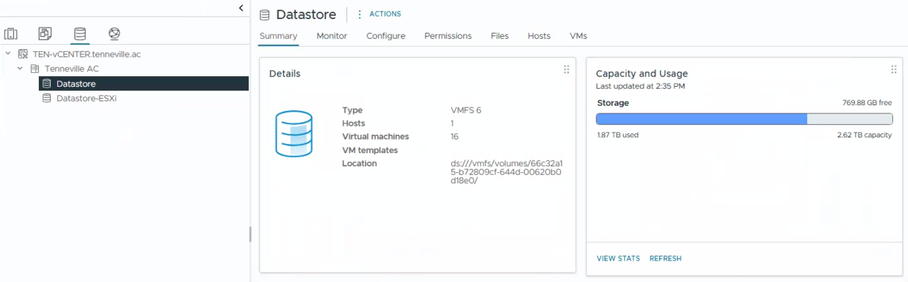

Objective
This check verifies the available free space status of all datastores. Adequate free space is important to maintain VM performance, allow snapshots, and safely perform maintenance operations.
Prerequisites
- Access to vSphere Client
- Read or monitoring permissions
- Access to ESXi hosts and virtual machines
Open vSphere Client
Log in to the vSphere Web Client using a web browser. Access the vCenter instance via its IP address or FQDN.

Open Datastore View
Log in to the vSphere Web Client, then navigate to Inventory and select Datastores.

Review Free Space
Review the free space available on each datastore.
- Sufficient free space available (according to internal policy)
- No datastore close to full capacity
- No active datastore-related alerts
As a general best practice, datastores typically maintain at least 20–25% free space. This value is provided as guidance and does not represent a mandatory requirement.
Result Interpretation
- ✅ OK – Datastore free space reviewed. No critical capacity issues detected.
- ⚠️ WARNING – One or more datastores below recommended threshold
- ❌ NOK – Datastore critically full or at risk of outage